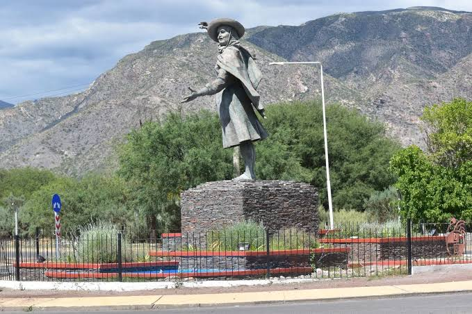
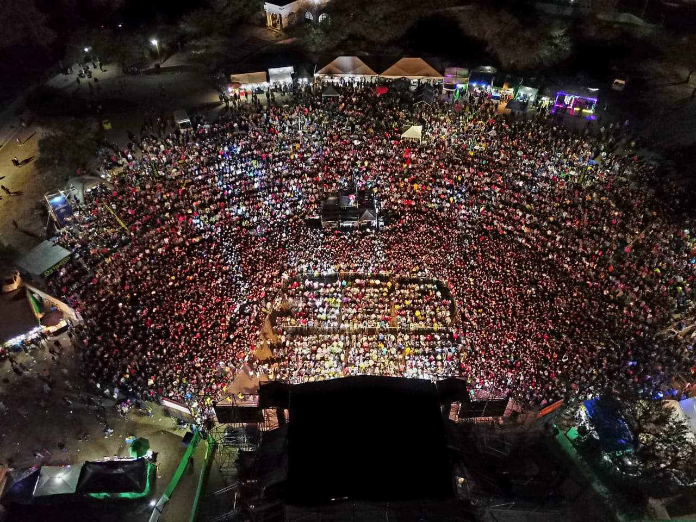
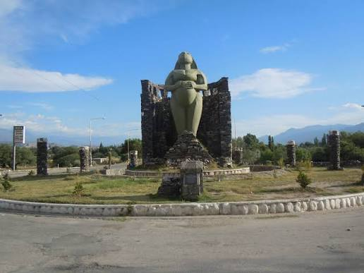
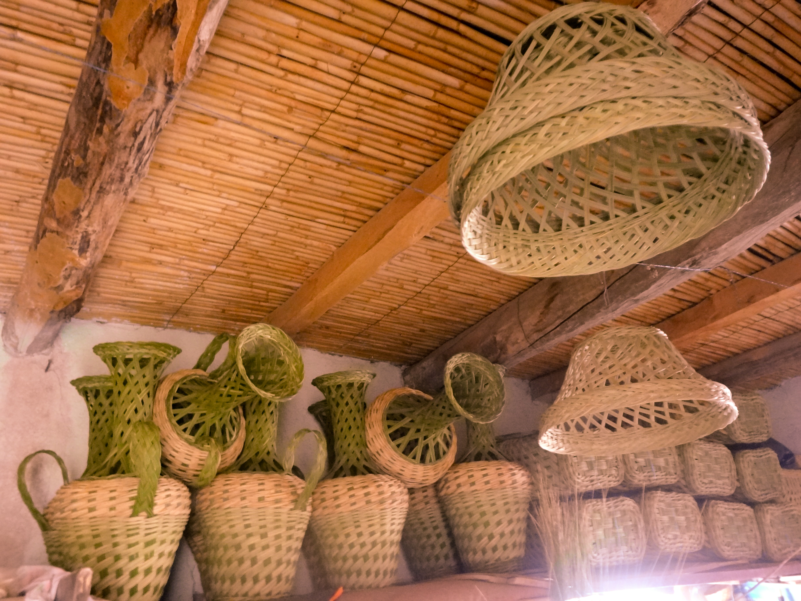
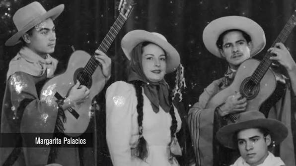
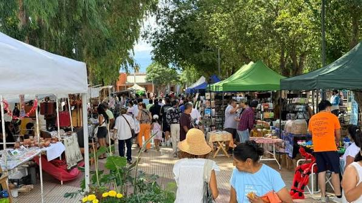

Cultura · Santa María
La cultura que nos identifica
Tradiciones, celebraciones y expresiones que forman parte del alma de Santa María
Identidad cultural
Una identidad construida a través del tiempo.
Santa María conserva una identidad profundamente ligada a la historia del Valle de Yokavil. Sus raíces ancestrales, el legado de los pueblos originarios y las tradiciones transmitidas entre generaciones forman parte de una cultura que continúa presente en la vida cotidiana.
La música, las celebraciones populares, las artesanías y los sabores regionales expresan el vínculo de su gente con la tierra y sus costumbres. Una identidad que se mantiene viva y se comparte con quienes llegan a descubrir este rincón de Catamarca.

Encuentros y comunidad
Celebraciones que reúnen a todo un pueblo.
A lo largo del año, Santa María celebra su identidad a través de festivales y encuentros populares que convocan a vecinos y visitantes. La música, las danzas, las expresiones artísticas y las costumbres regionales se convierten en protagonistas de estas celebraciones.
Entre sus encuentros más representativos se encuentra la Fiesta Nacional Santa María la Reina del Yokavil, cuyo primer festival se realizó en enero de 1968. También se destacan la Fiesta de la Capia, celebrada durante el invierno, y el Festival de la Arropiada, en Fuerte Quemado, donde se mantienen tradiciones vinculadas a la elaboración del arrope de uva.

Territorio y tradición
Una relación profunda con la Madre Tierra.
La Pachamama ocupa un lugar significativo en la cosmovisión de los pueblos andinos. Representa a la Madre Tierra y expresa una relación de respeto, agradecimiento y reciprocidad con la naturaleza.
En Santa María, esta herencia cultural forma parte de la identidad del territorio. Las prácticas y ceremonias vinculadas a la Pachamama mantienen presente una forma ancestral de comprender la tierra como fuente de vida, alimento y sustento.
Su significado trasciende una celebración: representa un vínculo cultural y espiritual que continúa transmitiéndose entre generaciones.


Oficios y creación
Saberes que se transforman en arte.
El trabajo artesanal es una de las expresiones más representativas de la cultura santamariana. A través del tejido, el hilado y otras técnicas tradicionales, los artesanos transforman materias primas locales en piezas que reflejan la identidad del valle.
Entre estas expresiones se destaca el poncho santamariano, también conocido como poncho andariego, elaborado por las integrantes de la cooperativa textil Tinku Kamayu. Sus colores, inspirados en el paisaje y la identidad local, lo convierten en una pieza distintiva de Santa María.
Cada creación representa el conocimiento, la dedicación y la continuidad de los oficios artesanales.
Expresiones folklóricas
El folklore como expresión de nuestra identidad.
La música folklórica ocupa un lugar importante en la vida cultural de Santa María. Sus canciones, encuentros y celebraciones mantienen vivo un patrimonio musical que forma parte de la identidad del Valle de Yokavil.
En festivales y reuniones populares, el canto y la danza acompañan a distintas generaciones, creando espacios de encuentro y transmisión cultural.
La tradición folklórica también se refleja en artistas y referentes que llevaron la música de esta tierra a otros lugares, contribuyendo a difundir la cultura santamariana.

Vida cultural
Costumbres que siguen formando parte de nuestra vida.
Las tradiciones de Santa María no pertenecen solamente al pasado: continúan presentes en sus talleres, ferias, celebraciones y actividades productivas. En cada oficio y encuentro comunitario se mantienen conocimientos que forman parte de la identidad local.
La elaboración artesanal de capias, el trabajo de las tejedoras, la producción regional y las reuniones populares son ejemplos de cómo las costumbres se adaptan al presente sin perder sus raíces.
Son estas prácticas cotidianas, sostenidas por su gente, las que mantienen viva la esencia cultural de Santa María.
